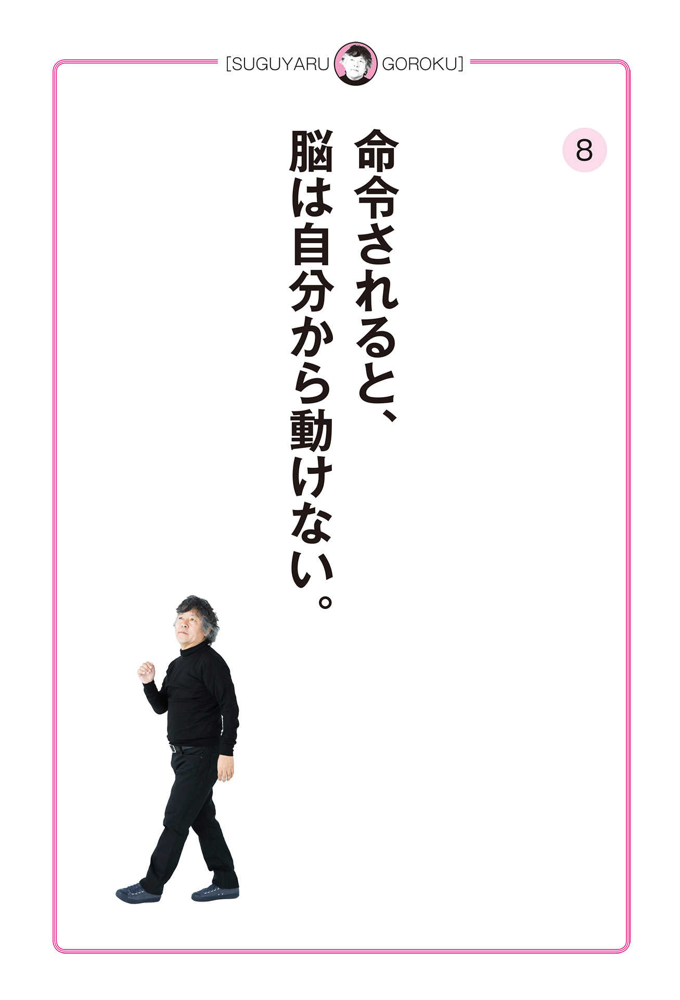

| 「すぐやる」語録 特別編集版 | |
| 茂木健一郎 | |
| 株式会社 学研プラス (2017) | |
実際にリスクが取れる人というのは、潜在能力として、自分のリスクテイクがどんな傾向かをきちんと認識しています。
案外、ネガティブ思考で危機に敏感な人ほど、いざとなれば果敢に大きな決断をすることも多いものです。
たとえば、江戸幕府をつくった徳川家康は、一般的なイメージとまったく逆の側面があったようです。
「慎重な人」「堅実な人」というイメージが広く伝わっていますが、合戦でいざ危機的な状況に追い込まれると、思い切った行動を取ることができたと言われています。
人により脳の「抑制」の形は違います。ある人にとってはネガティブな効果を発揮することがらが、別の人にはポジティブな効果をもたらすこともあるのです。
（『「すぐやる脳」のつくり方』２章）
仕事でも遊びでもそうですが、過去にうまくいったことはもう一度やりたくなるものです。それらが快い体験として脳に記憶されるためです。
ここでのポイントは、成功体験のとらえ方です。
ひと言で成功体験と言っても、そこには様々な考え方があります。世の中を変えるような画期的な成功体験もあれば、自分しかわからない小さな成功体験まで、本当に様々です。
実は、「脳にやる気を与える」という観点から考えるなら、成功体験とは世間に認められる成功ではなく、自分の中のごく小さな成功体験で十分です。
(「「すぐやる脳」の作り方」４章)
リスクを取りたいけれど、その勇気がない。リスクを取ってみたが、リスクへの不安がたえずつきまとっている──。これは、多くの人が抱える切実な問題でしょう。
そうしたメンタル管理のひとつに「最悪の状況を想定して、それに対する心構えをつくっておく」という考え方があります。
たとえば、仕事でミスをしてしまったときに、上司に報告に行かなければならない。そのときに、「最悪、こうなったらこうしよう」というシナリオさえ用意しておけば、大抵の事態には対応していくことが可能です。
「最悪、こうすればいいや」というシナリオがあることによって、それほどネガティブな考えに陥らなくてすむのです。
（『「すぐやる脳」のつくり方』２章）
真面目な人や完璧主義者にありがちなパターンなのですが、たとえば英語を勉強しようと決めて三日目までは続いたのに、何らかの理由で四日目にできなかったときに、「ああ、やっぱり私にはできなかった」「これだから、私はダメなんだ」と嫌気がさして、以後はすっぱりやめてしまうことがあります。
でも、よく考えてみてください。あきらめてやらないよりも、途中からでもやったほうがいいじゃないかという考え方が、ベストエフォート（最善努力）方式です。
やる気を持って何かをすぐやるときには、「ベストエフォートでいいんだ」ということを、徹底的に自分に叩き込むことが大事なポイントになってきます。
（『「すぐやる脳」のつくり方』１章）
「飽きっぽい」というのは、人間の脳だけが持つ特殊な能力だと私は思っています。というのも、人工知能が備えているのは「飽きない能力」だからです。
いろいろな仕事に興味を持ってぎゅっと集中し、瞬時に脳を切り替えていく。それではどの仕事も中途半端に終わってしまうでしょうか？
意外なことに、どの仕事の精度も上がっていることに気がつくはずです。なぜならそれが、脳の働きにそった仕事の進め方だからです。
（『「すぐやる脳」のつくり方』３章）
大事なことは、自分に対して「今、自分がどう感じていて、どういうコンディションなのか」とつねに対話すべきということです。
仕事をしていても、メンタルな問題を抱えてしまう人というのは、自分と対話ができていないのではと感じます。
無理なときはやめる、眠かったら寝る。気分転換が必要だったら気分転換するというふうに、自分との対話によってやる気のバロメーターを測ることができるのです。
（『「すぐやる脳」のつくり方』４章）
私は以前、何度か禅宗の曹洞宗大本山・永平寺を訪れたことがあります。
そこで修業をされている僧侶の方にお聞きした話ですが、お寺の修行とは本当に厳しい世界で、「いつも頑張る」という意識ではとても続かないのだということです。だからこそ、お寺の修行では禅の教えをもとに頭を空っぽにしています。
そう考えてみると毎日のルーティンワークも、頭をからっぽにするための修行と言うことができるでしょう。それによって「頑張る」のペース配分が身についていき、確実に習慣化できるようになるのです。
（『「すぐやる脳」のつくり方』５章）

「あの仕事、いい加減早くやってよ」「何、この前の仕事まだやってないの？」
会社で部下が任された仕事をまだ終えていないとき、上司はこのように、つい命令や否定から入る言葉を口にしてしまいがちです。
しかしこうした命令や否定から入る言葉は、相手に早くやってもらうことよりも、どちらかと言えば、相手の行動にダメ出しすることが目的になっています。
「さあ、そろそろ頼んでいた仕事をやってみようか」
「今日は売り上げが上がるように頑張ってみようよ」
相手に何かをしてほしいときは、ポジティブな言葉がけをすることで相手の脳によい作用を及ぼし、望む結果を得ることができます。
（『「すぐやる脳」のつくり方』４章）
これは単なるネガティブな状態ではなく、環境に対する正しい適応と言うことができるのです。
たとえばやる気が起きない、何に対しても行動に移せないビジネスパーソンや、ひきこもりと言われる人などは、その人が置かれている環境における脳の適応のなせる業とも言えます。
人はそんなとき、社会に順応できない自分を否定的に考えて、「自分はダメだ」と思ってしまいがちです。けれども本当は、そのように考える必要などまったくないのです。なぜなら、脳が不安定な環境に適応しているだけなのです。
（『「すぐやる脳」のつくり方』２章）
行動の自主性を生み出す一番の秘訣は自分なりの目標や課題、夢を持つことです。そうすれば、「自分でやろう」という意識が高まります。課題というのは、やはり自分で設定するのが一番よいのです。
「まだ宿題やってないの？」
小学校の頃、お母さんにこう言われた人も多いのではないでしょうか。
そしてそう言われるほど、やる気がなくなってしまったのではないでしょうか。実はそんなときほど、この「課題変換」が必要だったのです。
自律的に行動できるような視点を見つけるため、普段から「この課題はどうすれば自分の課題になるのか」という、自分自身の「成長の基準」を確立しておくことが大切なのです。
（『「すぐやる脳」のつくり方』４章）
宇宙飛行士は徹底的に、同じことを繰り返して訓練します。なぜならば、機器の操作にしても無意識にできるぐらいまで慣れておかなければ、そこに気を取られることで、いざというときに複雑な状況判断ができなくなってしまうからです。
いかにルーティンワークで余計なエネルギーをかけず、もっと別の大事なことにエネルギーを振り分ける余裕をつくれるか。
それが「すぐやる脳」の回路を働かせる大きなヒントになるのです。
（『「すぐやる脳」のつくり方』２章）
以前、ＮＨＫの『プロフェッショナル 仕事の流儀』という番組に出演された左官技能士の挾土秀平さんが、とても興味深いことをおっしゃっていました。
左官技能士とは壁塗りの職人さんですが、挾土さんは「不安の中に成功がある」という信念を持っています。
壁塗りは、一度土を塗り切ってしまえばやり直しはききません。彼はつねに自分自身に「これで大丈夫だろうか」と問いかけているそうです。
リスクを取るということは、いたずらに危険を冒すということではありません。あらかじめ最悪の状況を考え、不安を取り除いておくことも、リスクテイクの大きな条件です。それにより、人間の実行力は大幅に強化されるのです。
（『「すぐやる脳」のつくり方』２章）
そもそも、チャンスとは何なのでしょうか。いきなり宝くじの特等が当たること？ 突然あこがれの部署に配属の辞令が下ること？
実際はそんなことはありません。それを受け入れられるかどうか。そこにあなたの成功がかかっているのです。
たとえば会社から困難な課題を課せられた場合なども、それを受け入れて、正面から取り組むことにより大きく成長できます。つまりチャンスとは、一見すると格好よくない場合が多いものです。
（『「すぐやる脳」のつくり方』２章）
過去にいろんな失敗や他人から否定されたことで、仕事や勉強に対して目標を持てなくなってしまっている人が増えています。
では、どうすれば無気力な状態を乗り越えることができるか。
それは、「小さな成功を恥ずかしがらずに喜ぶ」ということです。
なぜなら、脳の報酬系というのはゴールを設定し、それを実行して喜びを感じることによって強化されていくためです。
「すぐやる脳」を強化する回路というのは、その繰り返しによって成長していくのです。
（『「すぐやる脳」のつくり方』４章）
「なぜ、日本人はすぐに決断し、行動に移せないのか」
以前から繰り返し議論されている問題です。この理由もまた、真面目な日本人が、きっちりと集団の決まりを守るところからきているのです。
すぐに動けない人の原因を、脳科学的にご説明しましょう。
それは意外なことに、脳が正しく働いているためなのです。
すぐに動けない人とは、脳の前頭葉が指示通りに機能して、抑制が利いてしまっている人のことです。
（『「すぐやる脳」のつくり方』１章）
かのスティーブ・ジョブズは若き日に、コンピュータの世界では何の役にも立たない、カリグラフィという文字のデザインアートに没頭していた時期があります。ジョブズは後に、次のようなことを語っています。
「カリグラフィがわたしの生活に何ら役に立つはずもありませんでした。ところが十年後、最初のマッキントッシュをデザインしているときに、その経験がよみがえってきたのです。もし大学をドロップアウトして、カリグラフィの授業に潜り込むことがなければ、コンピュータが美しいフォントを持つことはなかったかもしれない」
これからの時代、私はそうした「オタク力」が武器になるように感じてなりません。
（『「すぐやる脳」のつくり方』６章）
クリエイティブの〝本質〟とは何でしょうか？
それは絵が描けることでも、音楽を奏でられることでもありません。それをひと言で言うならば、「様々な制約をクリアしながら新しいものをつくり上げること」でしょう。
たとえば夏目漱石が近代文学史に輝く名作『こころ』を書いたときも、まさにこの締め切りのおかげがありました。
そもそもこの小説は朝日新聞の連載小説として書かれたのですが、ストーリー後半の「先生と遺書」の部分は、次に連載を担当する弟子が失踪してしまい、師匠である漱石が必死に物語を引き延ばす苦肉の策であったと言われています。
漱石の才能はもちろんですが、締め切りのための時間稼ぎという〝制約〟が手伝って、この素晴らしい作品は生まれたのではないでしょうか。
（『「すぐやる脳」のつくり方』３章）
経済の話をしていたはずが、いつの間にか流行の漫才コンビの話にすり替わり、あげくの果てに、小学校時代の懐かしいケシゴム遊びへと脱線していって──。その場の雰囲気でガラリと変わっていく話の様子は、ほとんどミュージシャンのジャムセッションです。
特定の目的を持たない、創造性に富んだ自由なコミュニケーション。この雑談の時間をつくることで、創造力は大きく飛躍します。
結果、実質的な打ち合わせも省力化できるため、トップスピードでこなせます。まさに一石二鳥です。
（『「すぐやる脳」のつくり方』１章）
このゲーミフィケーションに欠かせない要素は、目標を達成した後で、満足感を得られるテーマを設定することです。
英語の本を読んでいるなら、「あと２ページ読んでからお風呂に入ろう」と設定してみる。ゴール後に気持ちいいお風呂という満足感が待っていることで、前頭葉の回路が刺激されるというわけです。
ゴールを決めてスタートし、達成したときの満足感を得る。このサイクルを毎日回しているかどうかで、成長のスピードは大幅に変わってきます。
（『「すぐやる脳」のつくり方』４章）
オーバースペックとはパソコン関係でよく使う言葉で、ほとんど使うことのない高級な機能のことを指す和製英語です。
たとえば、ある流通の会社が「倉庫の仕分け作業ができる人」を求めているのに、応募者が「弁護士」や「行政書士」などの資格を持っていたり、英語が並みはずれて堪能だったりというような場合です。
そういう人材が世の中や会社の仕組みを変えることがあるのです。グローバル社会で通用する人間になるためには、万人が求めるスキルをいくら極めて見たところで、必ず上には上がいます。
それよりも、今、目の前の業務に何かしら新しい視点・知識をかけ合わせる。それによって、素晴らしいイノベーションが起こることもあるのです。
（『「すぐやる脳」のつくり方』６章）
一説によれば、現代に存在する仕事の47 ％が、十～二十年後には人工知能に代行されるといった予測もされているのです。
そんな世の中で、ひたすら地道にじっくりと、目の前の仕事をこなしているだけでは、将来はおぼつかないというのが今の世の中です。
できるかどうかわからないけれど、まず、やってみようと決心する。今、その方向に道はないけれど、自分で道をつくってみる。
そうしたリスクを取れる「すぐやる脳」を持った人が、これからの世の中をたくましく生き抜いていけるのではないかと思います。
（『「すぐやる脳」のつくり方』２章）
ビジネスの世界でも、今では当たり前につかわれているインターネット。
今や我々の暮らしになくてはならないものですが、インターネットの黎明期には「良い発明だがビジネスにはつかえない」、「こんなものは信用できない」という意見が多数を占めていたことを、私は鮮明に覚えています。
ところが現在はどうでしょうか。もはや、説明する必要もありません。
「きっとムリ」「たぶんダメ」......。私たちは実際にスタートする前にこんな言葉でみずからを縛ってしまいがちです。けれどもこんな例からも、いかにして固定観念というガラスの天井を突き破るかのヒントが見えてきたのではないでしょうか。
（『「ポジティブ脳」のつかい方』３章）
そもそも「ネガティブ脳」から「ポジティブ脳」へと変身する、その作業自体は単純なことです。要は発想の転換をして、思う方向へと行動に移せばいいだけ。
けれどもそんなときに、脳は現状維持にこだわって、さまざまな抑制をかけて抵抗します。
とにかく深く考えず、目の前のことを「良い」とも「悪い」とも考えず、「脳と心の基礎体力」を養って、ただ淡々と行動する──。
それを繰り返していると、やがて脳の抑制が外れてモノの見え方が変わります。そして逆に、「無理して変わらないことのほうがつらいことなんだ」と思えるようになってきます。
（『「ポジティブ脳」のつかい方』１章）
この言葉の背景にあるものは「他人からどう評価されるかは、自分の幸せや生き方とはいっさい関係ない」という私の考え方です。
自分が自分の基準で難しいと思うことに挑戦して、クリアしようと全力を注ぐ。その瞬間がこのうえもなく幸せなのです。ここには「他人の評価」は、まったく存在しないのです。
そうやって「自分基準」で行動し、考えることができると、本当に人生がラクになっていきます。
（『「ポジティブ脳」のつかい方』３章）
ストレス過剰な〝いっぱいいっぱい〟の状態のとき、いったいどのように感情のコントロールをすればいいのでしょうか。
脳科学の知見をもとに申し上げれば、失敗はまったくマイナスなどではなく、逆に、失敗こそが成功につながることが多いのです。
そもそも失敗とは、ある基準からはみ出しているという、単なる事実です。
ある基準での失敗は、ある別の基準から見れば成功になることがある。
このように聞くと、とてもリラックスした気分になりませんか？
（『「ポジティブ脳」のつかい方』２章）
まずは毎日、ほんの少しでいいから行動してみましょう。
たとえば朝のあいさつ。考えすぎて「おはよう」がいえない人は、すれちがいながらペコリと頭を下げるだけでいいんです。なにも大げさに、目を見ながら笑顔で「おはよう」なんて、する必要ないじゃありませんか。
この「ペコリ」を続けるうちに、ちょっとずつ「脳と心の基礎体力」がついてきます。そうしてある日、「おはよう」がいえる日もくるのです。
（『「ポジティブ脳」のつかい方』１章）
「ああ、自分は不安や怒りやねたみという、ネガティブな感情を持っているな」ということを、まず自分自身で認めることが大事です。それを否定する必要はありませんし、ただいつも通りに日常を送っていけばいいのです。
このように、自分自身の現状を他人の立場から、客観的かつ冷静に理解することを「メタ認知」といいます。まずはここで、自分がそういったネガティブな感情を持っていることを、この「メタ認知」によって冷静に受け止めることから始めてみてはいかがでしょうか。
（『「ポジティブ脳」のつかい方』１章）
コップに水が半分入っているときに、「まだ半分ある」と考えるか、「もう半分しかない」と考えるか、これがポジティブとネガティブの分かれ道だ──。
よく、こんなふうにいわれますよね。
これは誤解されやすいところなのですが、このたとえ話は、明るい人間か、暗い人間かの判別基準を表すものではありません。
ものごとの「注意の向け方」しだいで、状況はいとも簡単に、まさに一瞬で好転できる──。そのことを表している事例なのです。
要は「感情」の問題ではなく、もっと知的な「論理」の問題なのです。
（『「ポジティブ脳」のつかい方』４章）
会社組織に属する人の常として、自分が置かれている組織の「普通」を世間一般の常識と勘違いしてしまうことがあります。
たとえば、お昼ご飯はチームのメンバー全員で一緒に食べに行くのが「普通」。定時で退社せず、最低でも一時間の残業をするのが「普通」──。
こうした組織の「普通」に自分を無理やりに適合させていると、気づかないうちにストレスは体内に溜まっていきます。
どこに自分のストレスの原因があるのかをはっきりと認識する。しかもそれが絶対的に唯一の解、世間一般の常識ではないということに気づくだけで、ストレスに対する向き合い方もまったく違う展開が生まれるはずです。
（『「ポジティブ脳」のつかい方』２章）
ビジネスパーソンの方々を見ていると、どうも上司や他人の目を、必要以上に気にしながら仕事をしている人が多いように感じます。
たとえば会議で、みんなが「いいよね！」と盛り上がっているところに、「それはちょっと違うんじゃないかな？」などと発言しようものなら、たちまち「あいつは何をいっているんだ！」という空気が漂って孤立してしまう......。
でも、単にうわべだけの取り繕いをすることがポジティブな行動といえるでしょうか？
「ポジティブ脳」とは、決して空気を読んでまわりに歩調を合わせることではありません。自己保守的な行動が、望む結果をもたらすことはないからです。
（『「ポジティブ脳」のつかい方』３章）
たとえば、あまり好きではないルーティンワークと、大好きなクリエイティブワークがあったとします。あなたなら、どちらを先に片付けますか？
私なら、雑用を中心としたルーティンワークをなるべく前倒しでやってから、大好きなクリエイティブワーク（頭をつかうとっておきの仕事）にかかります。
さっさとルーティンを終えてしまう。そしてそのあとのクリエイティブな時間の余裕をつくる。そして、その仕事に淡々と取りかかる──。こういう発想になると、非常にいい流れで仕事ができるのです。
好きではない雑用をさっさとこなす。そして、最も大切なことに集中するための時間をしっかりとつくる。これは日々の仕事ばかりではなく、人生においても大切な創意工夫だと思います。
（『「ポジティブ脳」のつかい方』２章）
オリジナリティとは、不要なものを捨て去ったあとに残る「自分の核」と考えてよいと思います。「どんな学校を出たか」「どんな会社に勤めているか」「どんな場所に住んでいるか」など、人と比べて価値が生まれる要素をどんどんカットして、最後に残る、はだかの自分そのものです。
荒削りな原酒のような、そのままの自分をさらけ出してしまう。そうすると、あなたはまず「わかりやすい人」になります。長所も、弱点も一目瞭然です。そうするとあなたの魅力がいち早くわかってもらえます。案外、あなたが弱点だと思っていたところを認めてくれる人が出てくるのが、面白いところです。
（『「ポジティブ脳」のつかい方』３章）
アインシュタインの脳は、どうも普通の人よりも小さかったらしいという話が伝わっています。それが本当ならば、彼はなぜ、あれほどの目覚ましい成果を生み出すことができたのでしょうか？
たとえば、脳の大きさがほかの人よりも10 パーセント大きいということがあっても、そのこと自体が脳の働きにそれほど大した差を生んだりはしないのです。
むしろ、こうした「量的な差」よりも「質的な差」のほうが、脳の働きに大きく影響するのです。
重要なのは、限られた脳の回路をどうつなぐかであって、そちらの違いの方が、十倍、百倍、千倍の能力差につながる可能性があるのです。アインシュタインは人一倍「脳のつかい方」に長けていたということでしょう。
（『「ポジティブ脳」のつかい方』３章）
責任感が強く、作業の手を止めて休むことに罪悪感を持ってしまいがちな人は、偶発性という「天のカミサマ」に休む指令を出してもらえばいいのです。
たとえば、仕事のTo Doリストに１から６まで順番をつけて、その中の２つくらいに、自分に合ったストレス解消法をまぎれ込ませておきます。サイコロを振って「その目が出たら、サイコロの指令通りに○○をやる」と決めておくと、意外とスムーズに休憩の「キュー出し」ができるものです。
「あの人は仕事のできる人だね」といわれる人ほど遊び上手なのが世の常で、こうした小さな創意工夫を重ねながら仕事を進めていくことで、「ポジティブ脳」になれるのです。
（『「ポジティブ脳」のつかい方』２章）
原始仏教典のスッタニパータには、次のような言葉があります。
「サイの角のようにただ独り歩め」
これは、うっそうとしたジャングルを大きな角で分け入って、ずんずんと進むサイのたとえです。どんなときも自分の強い信念にもとづいて、たとえつらく孤独であっても、目の前をしっかりと見ながら生きて行けばいいという教えだと思います。
運にも左右されず、人にも左右されず、そしてどんな状況にも左右されず、ただ淡々と、今「やるべきこと」をやる。
そしてそれが思い通りに行かなければ、一度立ち止まって次のことを考える。そしてふたたび、ずんずんと進めばいい。
これこそが「ポジティブ脳」の習慣術だと実感しています。
（『「ポジティブ脳」のつかい方』４章）
じつをいうと、これは「ごっこ遊び」、英語では「pretend play」と呼ばれ、脳の前頭葉の働きからいっても非常に高度な作業なのです。
自分のキャラクターを「ひとつの人格でなければいけない」と考えてしまうからこそ、余計なストレスが発生してくるのです。
プレゼンではジョブズ脳コスプレでリラックス！
上司の前ではネコ脳コスプレでフレンドリーに！
宴会ではピエロ脳コスプレでノリを良く！
フィクションの自分をつくりあげ、自分で自分をだましてしまう。こうした工夫で、非常に気が楽になり、ストレスが減っていくのがわかるはずです。
（『「ポジティブ脳」のつかい方』２章）
もちろん、仕事でも一極集中で頑張らなければいけない時期は必ずあります。ただ、そこで憂鬱になったり、体力的にも消耗したりしてストレスが溜まったときに、きちんと「ガス抜き」することも忘れてほしくないのです。
たとえば、週末の使い方も、いろいろと工夫してみてはどうでしょう。脳を緊張から解放し、リラックスさせてあげる意味からも、さまざまな時間をつくってあげて欲しいのです。
重要なことは、「自分の中」に基準を持って、楽しく毎日を過ごせるかどうかなのです。
（『「ポジティブ脳」のつかい方』２章）
私は脳科学の研究を始めた30 歳ぐらいを契機に、そこからずっと好調のままと感じています。つまり、人生のスランプがないのです。
では、私はなぜ、ネガティブな気持ちにおちいることなく、いつもポジティブに生きていられるのか。その要因は、「自分にはいつも何かやることがあるんだ」という考え方になれたからだと思います。
やることが何もない状態を回避するには、たとえばスマートフォンを通じてインターネットの世界とつながることです。このスマホさえあれば、人間の動きは止まることがなく、あっちがダメならこっちへ行こうといった具合に、つねにやることの「動線」は確保されています。もう、人生において動きが止まる理由はないのです。
（『「ポジティブ脳」のつかい方』４章）
そもそも、不安なときこそ「単純作業」の効果があるのです。なぜなら、不安に注意を向けないための方法とは「なんでもいいから、ほかのことに注意を向けること」だからです。
それによって不安なことに脳のリソースを割く必要がなくなり、不安を解消する効果が期待できるはずです。
（『「ポジティブ脳」のつかい方』５章）
これは、アインシュタインが残した言葉です。ここに「ポジティブ脳」を活性化させる大きなヒントが隠されています。
みんなにどう思われるかではなく、自分が何をやりたいかで行動する。
何もしないよりは、失敗して挑戦したほうがいい──。
みなさんが「ポジティブ脳」を発揮して、このような逆転の発想をすることさえできれば、道は意外なほど開けていくのだと思います。
（『「ポジティブ脳」のつかい方』 あとがき）
一番わかりやすい例が、子どもです。
子どもの脳というのはとてもシンプルで、この飽きっぽいという脳の基本性質を素直に持ち合わせているものです。
「うちの子、何をやってもすぐに飽きちゃうんです」
そんなお母さん方の声が聞こえてきそうですが、実はこれ、脳にとってはとても健全なことなのです。なぜなら、自分が興味を持てないものがあれば、それをガマンしないということですから。
そんな風に、あれこれと興味を持って、一つに集中するのが苦手な性質のお子さんほど、実は将来性があるといえるのかもしれません。
（『やり抜く脳の鍛え方』３章）
さあ、やろう！ そう思った途端に「今日はなんか調子が出ないな」「今日はちょっとだけサボりたい気分だな」という気持ちが大きくなり......。
「まあ、今日はいいか」と心変わりをしてしまった経験、誰にでもあるのではないでしょうか。
そんな時、ただひたすら自分に鞭を打って我慢して取り組むよりは、そこからなるべく早く逃げてしまうことも有効な手段の一つです。
実際、気分が乗らない時に無理して続けていると、脳が、やること自体に嫌気がさしてしまうのです。
「あー、もう疲れた」「なんか飽きてきたな」という時には、すぐにその場から離れて作業をやめる勇気を持ってみてください。
そうしていったん離れてみて、やりたい気持ちになったなら、すぐに戻って来て再開したっていいのです。
（『やり抜く脳の鍛え方』２章）
三日坊主になりやすい人の特徴のひとつに、やり抜こうとしている時の報酬を設定していないことが挙げられます。
「やり抜く脳」を育てていくためには、たとえどんなに小さなことでもいいので、続けていることに対して何らかの報酬を用意してあげる必要があります。
・ジョギングのあとにはヤクルトを飲もう
・この原稿を書き終えたらコーヒーとチョコレートを食べよう
・このテレビ収録が終わったら、飲みに行こう
これらは私がよく自分自身に設定する報酬なのですが、こうした些細な報酬でも脳は十分に活性化し、ドーパミンを出します。こうしたほんのちょっとの工夫をするだけで、物事をより効果的に続けることができるのです。
（『やり抜く脳の鍛え方』２章）
積極的に行動して見聞を広め、出会いと気づきを繰り返しながら、そこに生じた結果を受け止める。一見すると散漫に感じられるこの一連の行動が、目標を引き寄せるのだと思います。
イメージとしては、一本の太い道をひたすら突き進むのではなく、点と点の間をひたすら移動して、少しずつ目標に近づいていくことに近いと思います。
私は、成功者は皆、セレンディピティ、つまりは偶然の幸運を掴む才能があるからこそ、大きな成功を手に入れられるのではないかと考えます。
セレンディピティは、何にでも首を突っ込む好奇心に満ちた、ある意味、おっちょこちょいぐらいの人のほうが出会う確率が上がります。
世の中、才能や知能の高さを頼みに頑張りさえすれば成功できるかといえば、そう甘いものではありません。いくら必死に努力しても、やはり一人の人間がやれることというのは限りがあるのですから。
（『やり抜く脳の鍛え方』１章）
ＩＴや人工知能の発達をはじめ、新しい価値観が次々に生まれ、先が見えない近頃のビジネスシーン。多くの皆さんが、これからどうやって成長していけばいいかと迷われるのも無理のないところでしょう。
こんな時、私はこのようなアドバイスをするよう心がけています。
「ゴールは遠くにあったほうがいい」
ここでいう〝遠く〟とは、簡単に手が届かない、ある程度困難を伴うけれど、どうしてもやってみたいことを目標に据えてみるということです。
目の前にある課題に向かい、日々コツコツと努力を続けることはとても大切ですが、私たちはともすれば、目の前の努力そのものが目標だと勘違いしがちです。
そんな時、遠く輝く北極星のような「自分のゴール」をいつも意識していることで、目標の舵取りを修正できるのです。
（『やり抜く脳の鍛え方』３章）
アスリートがスランプに陥った時などに、コーチからよくこうしたアドバイスが行われます。
何事もうまくいき、絶好調に見える時というのは、実はそれほどの学びもなく、たいした成長ができていない場合が多いものです。
やり抜くべきことの一つひとつが苦しくて、「何でこんなことをやっているんだろう」と立ち止まりたくなるような時には、「いまこそ実質的な成長が起こっているんだ」と、気持ちを切り替えてほしいと思います。
（『やり抜く脳の鍛え方』４章）
脳の活動は、忙しく同時並行で作業が進むような場合に活性化します。
あれが終わったら次はこれ、これとこれは、一緒にやってしまおう──。
そんな忙しい状態で集中力を発揮できてこそ、脳の〝筋力〟は鍛えられるというわけです。
細かな雑用を粘り強く、精度高くこなすことで、どんなことでも持続して成果を出すことができる。つまり、雑用には「やり抜く脳」を鍛えていくための基礎トレーニングが凝縮されているということなのです。
（『やり抜く脳の鍛え方』５章）
もともと私たち人間は、何かに挑戦しようとする際に、必要以上の不安を抱いてしまうことがあります。けれども実際には、「自分が思っているほど他人は自分のことを気にしていないのだ」ということを肝に銘じてください。
重要なのは他人の目ではなく、必要以上に背伸びせず、ありのままの自分でいることなのです。
何かをやり遂げて実績をあげていく人というのは、多少の失敗など気にしないものです。人は自分のことなどほとんど見ていない、他人の目など考えても仕方がないということを、経験から知っているのです。
（『やり抜く脳の鍛え方』２章）
たとえば英語の習得が目標であれば、あらかじめ学習の時間や分量を設定し、「この英語の本を今日ここまで読めれば自分の勝ち」「このプレゼンがうまくいったら、何か自分にご褒美をあげよう」などと、まるでゲームを楽しむかのように遊び心を持って取り組んでみるのです。
すると、脳の報酬系の回路が刺激されてドーパミンという神経伝達物質が湧き起こり、その結果、英語学習の集中力、持続力がアップするという具合です。
これは英語に限らず、本来面倒くさいと感じるルーティンワークや単純作業のような仕事でも、この方法ですぐに着手できるようになるでしょう。
（『やり抜く脳の鍛え方』２章）
そもそも脳は、あらかじめ想定できることに、たいして喜びを感じません。
脳は自分がどのように対応したらよいかわからない状況に身を置かれることに敏感に反応して、フル稼働を始めるのです。
私たちはこの「変化を求める脳」に促されて新しいことに挑戦し、慣れないところで必死にもがくわけですが、たとえどんなに失敗したとしても脳はダメージからしっかりと回復しますので安心してください。
一回の失敗で終わることなく、何度でもやり直し、挑戦できることこそが、脳の長所だといえるのです。
「もし、うまくいかなかったらどうしよう......」
こんなことを考えなくてもいいのです。そんな時は、脳の〝筋力〟を信じ、ひたすら反復サイクルを繰り返してみてください。
（『やり抜く脳の鍛え方』５章）
読むだけで「すぐやる人」に変身！ 茂木式・行動力強化術
●「脳の抑制」を外すだけで、行動力はアップする！
●「脳内ダイエット」で脳にやる気のスペースができる
●脳の中に「柔らかいTo Doリスト」を持とう
読むだけで「ストレス知らずの人生」に！ 茂木式・ポジティブ発想転換術
●ポジティブ思考には「ホンモノ」と「ニセモノ」がある
●毎日のリズムをテンポよく変える「脳内交響曲」
●人生を逆回りさせる「たら・ればスパイラル」にご用心！
ＰＡＲＴ３ 『ＩＱも才能もぶっとばせ！ やり抜く脳の鍛え方』
読むだけで「やり抜く力」が湧いてくる！ 茂木式・絶対目標達成ブレイン・トレーニング
●シリコンバレー流メンタル強化術「マドル・スルー」とは？
●パッとはじまり、パッと終わる「ストップウォッチ・トレーニング」
●「脳内連係プレー」で、どんな人でも自己肯定感がアップ！
「すぐやる」語録 特別編集版 電子版
２０１７年４月 version1.0発行
著者 茂木健一郎
発行人 鈴木昌子
編集人 吉岡 勇
編集長 倉上 実
発行 株式会社 学研プラス
〒１４１－８４１５ 東京都品川区西五反田２－11 －８
【お問い合わせ】http://ebook.gakken.jp/contact/ （電子出版専用）
©Kenichiro Mogi 2017
本書の無断転載、複製、頒布、公衆送信、翻訳、翻案等を禁じます。
学研グループの書籍・雑誌についての新刊情報・詳細情報は、以下をご覧ください。
学研出版サイト http://hon.gakken.jp/
※このコンテンツは学研プラスが刊行する茂木健一郎先生の３作品を再構成したものです。実際に掲載されている文章とは若干表現の異なる部分がありますことをご了承ください。